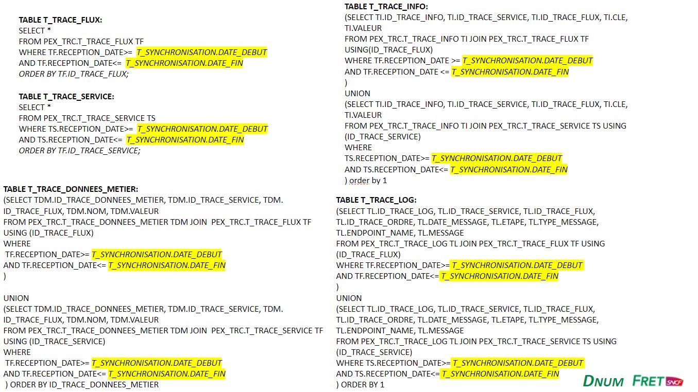
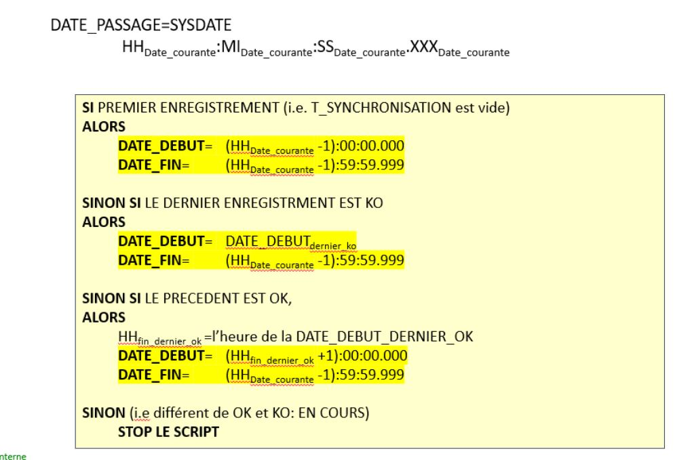

Il s'agit d'une base de donnée dans laquelle vas etre stocké les traces recuperer de la base de production
Pouvoir récupérer les informations contenue dans la PEX_TRC et les stocker dans la base Statistique. Dans le cas où des données n’ont pas été synchronisées, il faut prévoir un mécanisme de rattrapage.
J'ai du créer les script permettant de recuperer les données stocké dans les differentes tables de la base PEX_TRC
Mes requetes SQL ont ensuite été implementé dans un script csv suivant un algorithm
Si vous voulez en savoir plus, consultez la documentation :
Documentation_Base_Statistique.pptx